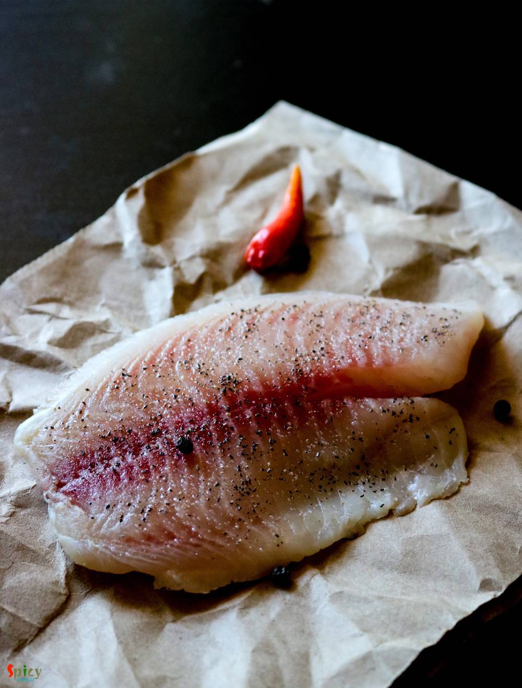

Simple and Easy Recipes
Kolkata style Chili Fish
© 2016 Spicy World, Published on: Nov 7, 2018
One of my favorite indo-chinese dish is 'Chili Fish' - which is very similar to Chili Chicken. In this recipe, deep fried fish nuggets will be cooked in a hot and spicy sauce with onions and peppers... so, so delicious ! You can get them in many Chinese restaurants in Kolkata. It tastes heavenly with fried rice or noodles and it is very easy to make. Try this recipe in your kitchen and enjoy with your family.

Ingredients
- 3 fillets of any white fish. (tilapia / vetki / barramundi / basa)
- 4-5 Tablespoons of beaten egg.
- 3 Tablespoons of cornflour.
- 2-3 Tablespoons of soy sauce.
- 3 Tablespoons of spicy chili sauce.
- Salt and sugar.
- 1 Tablespoon of finely chopped garlic and ginger.
- 3 green chilies, chopped.
- 1 Tablespoon of black pepper powder.
- 1 cup of vegetable oil.
- Hot water.
- 1 Tablespoon of oyster sauce.
- 1 small onion, cut into cubes.
- A handful of cubed capsicums.
- Some chopped green part of spring onion.
- A Teaspoon of vinegar.
- 1 Teaspoon of black pepper powder.
- Some chopped white part of spring onion.
- 1 Teaspoon of ginger garlic paste.
- 2 Teaspoons of lemon juice.


Steps

Wash the fillets cery well with water and then pat dry them with a tissue.
Then cut the fillets into chunks with a knife.
In a bowl, add fish chunks, ginger garlic paste, some salt, half Tablespoon of black pepper powder, 1 Tablespoon of dark soy sauce, lemon juice, beaten egg and cornflour. Mix well and keep it aside for 15-20 minutes.
Heat a cup of oil in a pan and fry the battered fish chunks in hot oil for 3-4 minutes. Do not overcrowd the pan, put 5-6 at a time. After frying take them out in a paper tissue.
Heat 2-3 Tablespoons of oil in a wok or pan.
Add the minced ginger, garlic, chopped green chilies and white part of green onion. Saute for few seconds.
Then add cubed onion and capsicums. Fry for 2 minutes on high flame. Do not fry them long, otherwise they will become soggy.
Then add 1/4th cup of hot water, cook for 2 minutes. Then add chili sauce, remaining soy sauce and oyster sauce. Mix well for 2 minutes.
Now add some salt, half Teaspoon of sugar. If you like, you can also add pinch of msg / ajinomoto. Mix well for a minute.
Add 2 Tablespoons of cornflour diluted water. This will help to thicken the sauce.
Now add the fried fish, toss them well with the sauce. Cook for 2 minutes on high flame.
Lastly add the remaining pepper powder, vinegar and some chopped spring onion all over the dish, mix well and immediately turn off the heat.
Your chilli fish is ready ...
Serve them hot with fried rice, garlic rice or hakka noodles ...
")